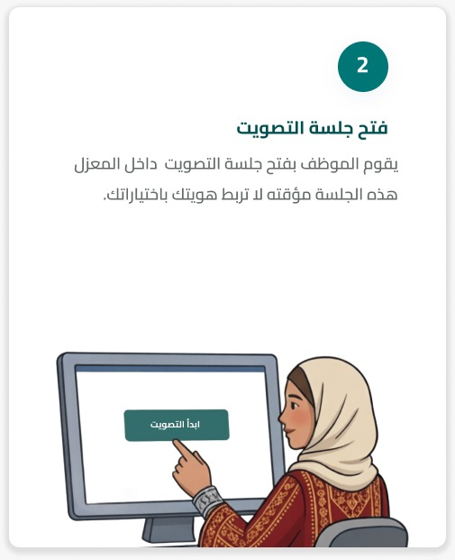
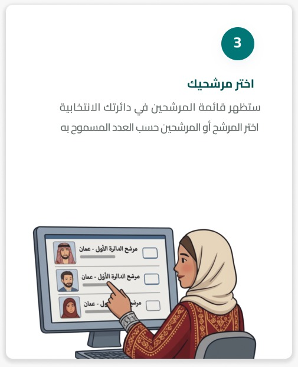
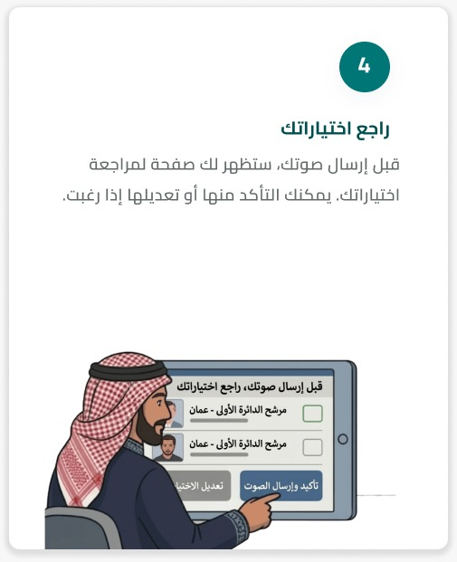

اكتشف خطوات التصويت داخل مركز الاقتراع
نوفر لك كل ما تحتاجه للمشاركة في الانتخابات بسهولة
اعرف موقع مركز الاقتراع الخاص بك بسهولة باستخدام الرقم الوطني
تصفح قوائم المرشحين في دائرتك الانتخابية وبرامجهم بسهولة
نضمن لك سرية تامة لخياراتك وحماية كاملة لبيانات الناخب
تابع تحديثات الفرز والنتائج الأولية والنهائية فور صدورها
خطوات بسيطة تضمن حقك الدستوري بكل سهولة وأمان



